Misi: Jadi Programmer Magang
Kamu magang di Loket Wisata Mangrove Tarakan. Analis Sistem memberimu flowchart (gambar alur). Tugasmu menerjemahkannya menjadi program blok Scratch dan kode Python, lalu mengujinya sampai benar.
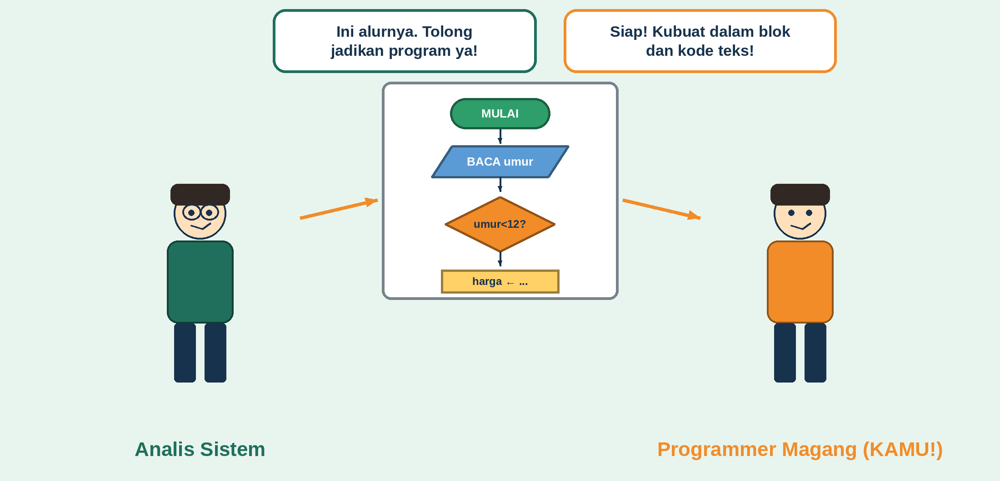
Setelah belajar ini kamu bisa: menyebut arti simbol flowchart dan padanannya · menelusuri jalur flowchart · menerjemahkan urutan, percabangan, dan subprogram · memperbaiki bug translasi.
Catatan: harga tiket dan aturan umur adalah karangan untuk latihan, bukan tarif resmi.
1. Kenalan dengan Simbol Flowchart
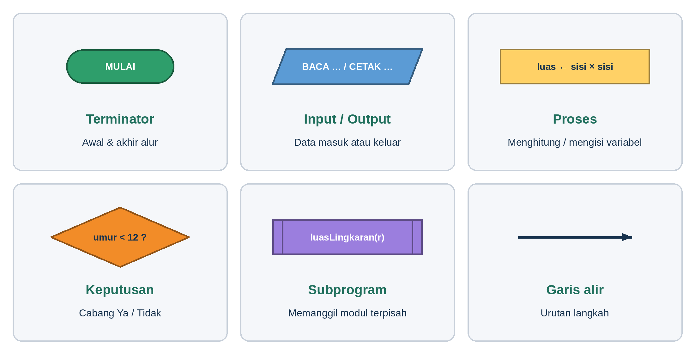
Klik simbol untuk melihat arti dan pasangannya:
Pilih salah satu simbol di atas.
2. Empat Langkah Jitu Translasi
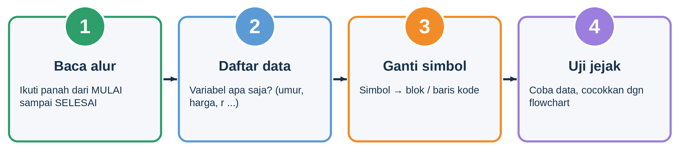
Satu simbol = satu blok atau satu baris kode, urut sesuai panah. Selalu uji dengan data biasa dan nilai batas.
Satu logika, tiga wajah
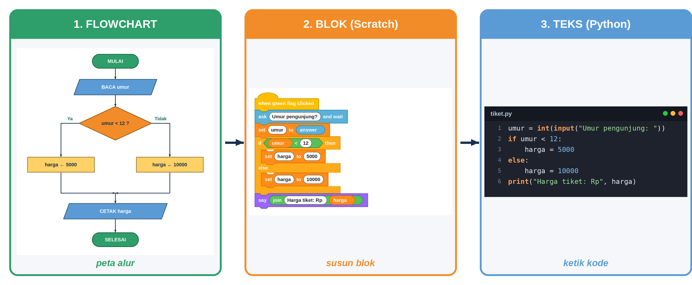
3. Kamus Padanan
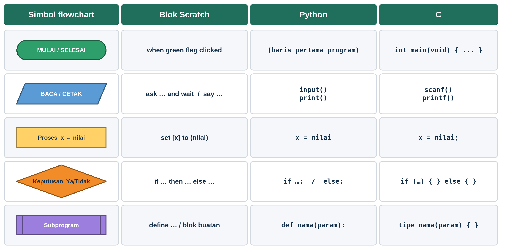
Game: Pasangkan!
Klik satu simbol di kiri, lalu pasangannya di Python di kanan.
4. Level 1: Urutan (Luas Persegi)
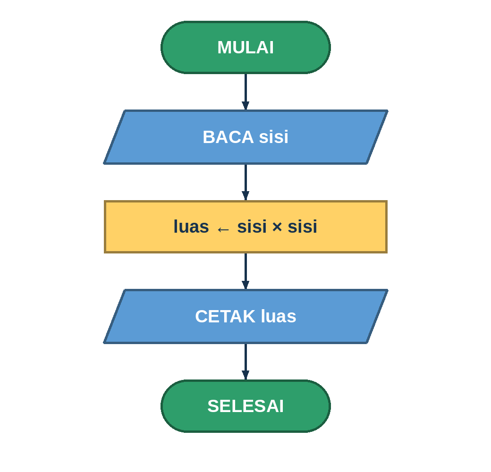
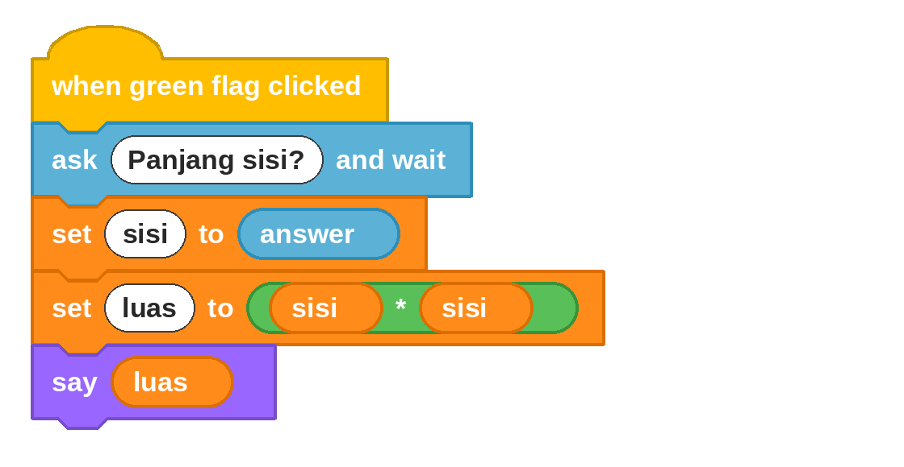
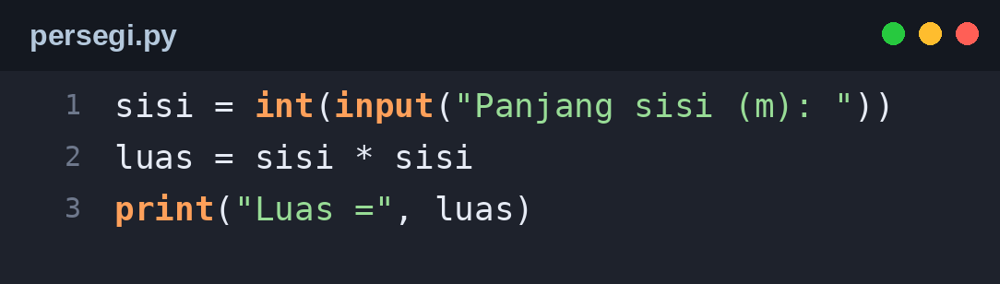
Coba jalankan!
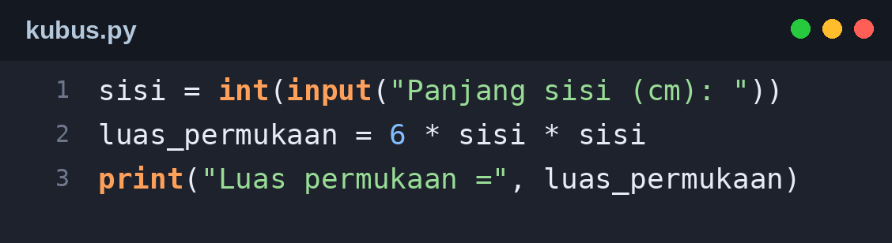
Awas jebakan: kali ditulis
*, dan = berarti "simpan ke variabel".5. Level 2: Loket Tiket (Percabangan)
Aturan (fiktif): umur di bawah 12 bayar Rp5.000, selain itu Rp10.000.
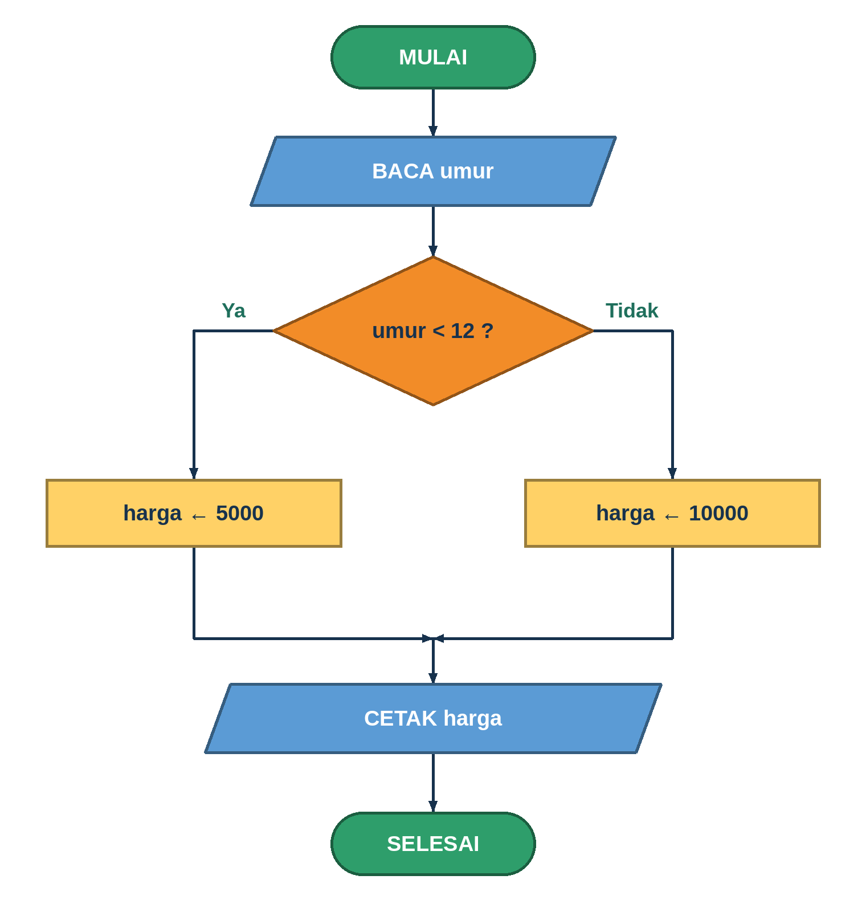
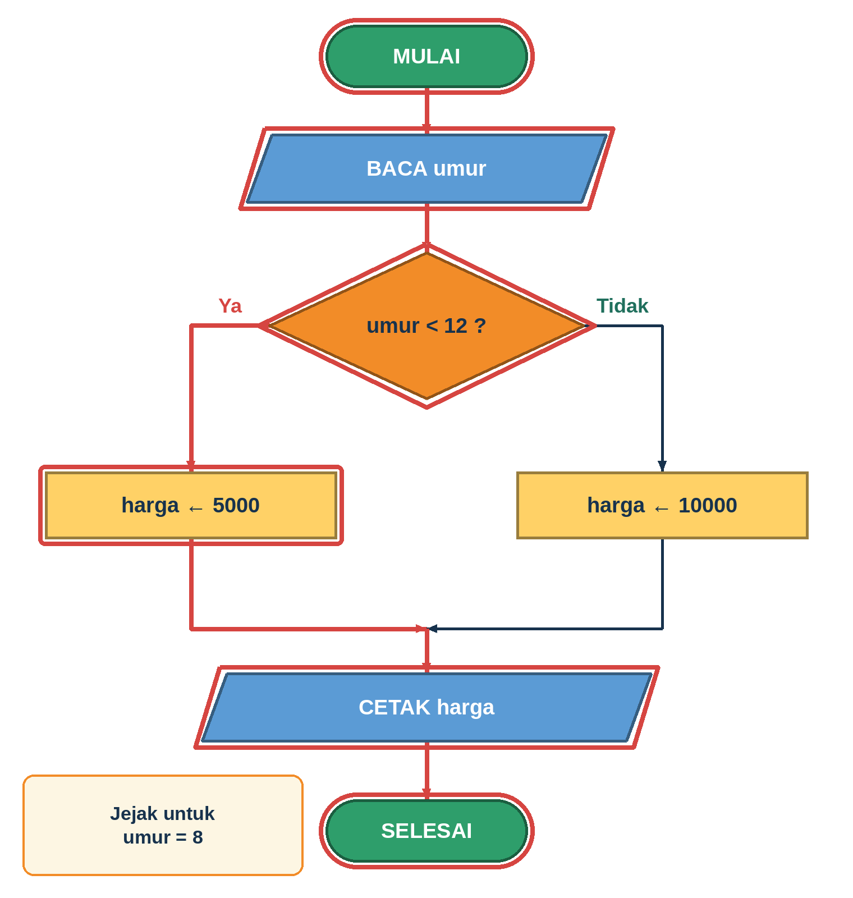
Simulator jejak
Jadi blok dan kode
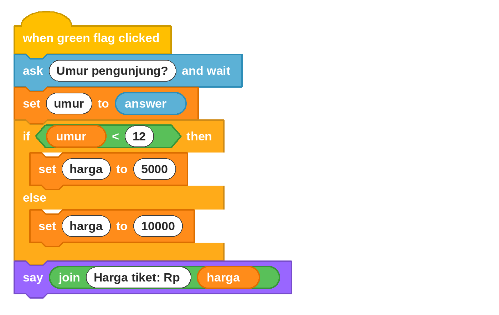
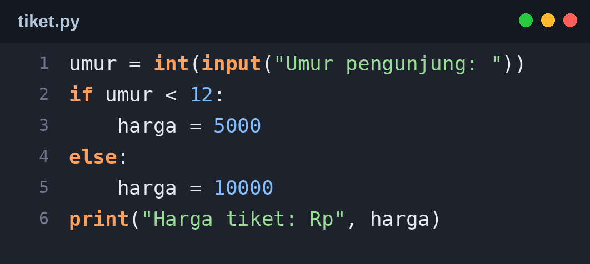
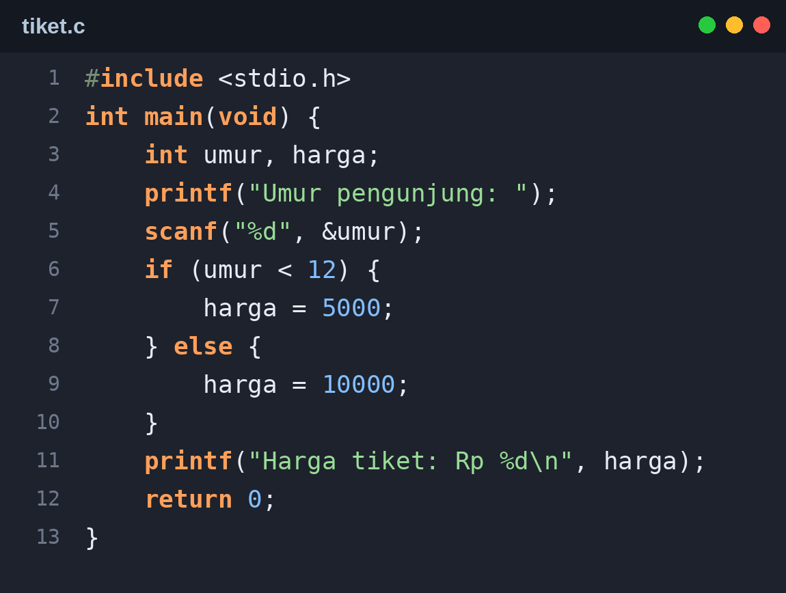
Uji nilai batas: coba umur 11 dan 12. Di sinilah
< dan <= berbeda!6. Level 3: Subprogram (Luas Kolam Lingkaran)
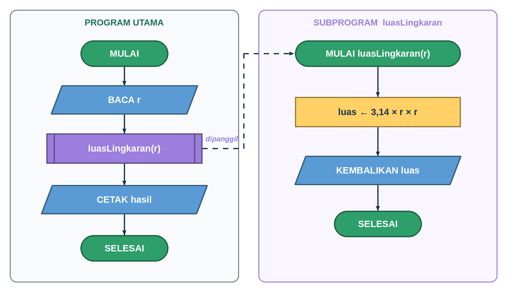
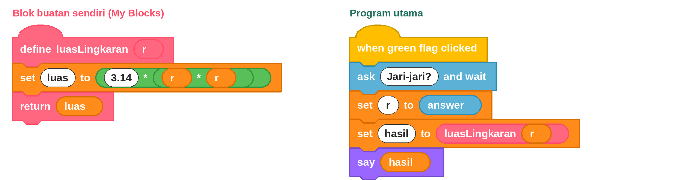
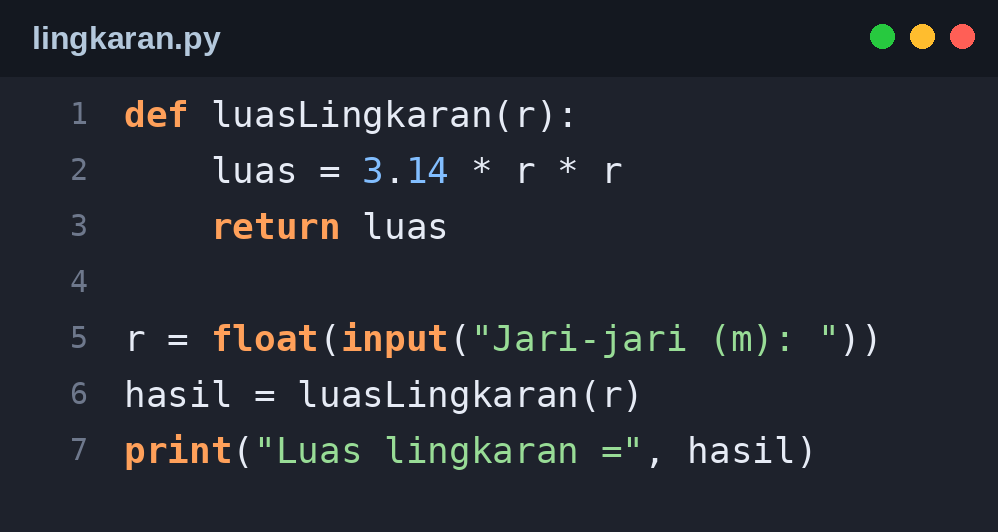
Coba jalankan!
return mengembalikan hasil ke pemanggil; print hanya menampilkan ke layar.7. Level 4: Detektif Translasi
Program ini katanya hasil translasi flowchart tiket, tetapi ada 4 kesalahan. Klik baris yang menurutmu salah, lalu tekan Periksa.
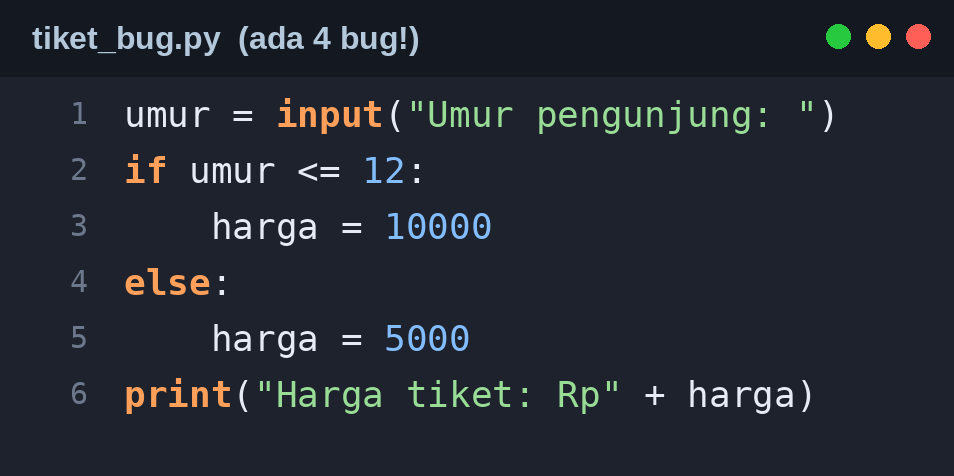
Hasil perbaikan bertahap (buka setelah mencoba)
| Setelah diperbaiki | umur 8 | umur 12 | umur 30 |
|---|---|---|---|
| (belum ada) | error | error | error |
| + int() | error (baris 6) | error | error |
| + int() + str() | 10000 (salah) | 10000 | 5000 (salah) |
| + tukar cabang | 5000 | 5000 (salah, batas) | 10000 |
| + ganti <= jadi < | 5000 | 10000 | 10000 |
8. Kuis Mandiri (10 soal)
Rangkuman
- Flowchart, blok, dan teks = tiga cara menulis logika yang sama.
- Translasi: baca alur → daftar data → ganti simbol → uji jejak.
- BACA/CETAK = input/print · proses = penugasan · keputusan = if/else · subprogram = def.
- Python:
input()menghasilkan teks, ubah denganint()ataufloat(). - Selalu uji dengan nilai batas.